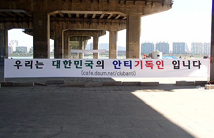

[안티 기독교인들이 뭉쳤다. 실로 위험하다.]
얼마전 영등위(영상물 등급 심의 위원회)가 게임 등급 심의 기준을 강화했다.
간단히 말해서 웬만한 게임들은 18금(18세 미만 이용 금지) 판정을 내리겠다고 통보한 것이다.
이유는 뭐 흔한거다. 사행성 조장, 폭력성, 선정성 등이다.
등급 강화의 배후에는 '기독교 윤리 실천 운동' 이 있다고 한다.
기독교 윤리.
별로 놀라운 일은 아니다. 기독교인들은 자신들의 교리를 모든 사람들이 지켜야 한다고 믿기 때문이다.
'네 이웃을 네 몸과 같이 사랑하라' 는 교리를 갖고 있는 기독교에서 매일 죽고 죽이는 온라인 게임을 보면 얼마나 끔찍할까? 더욱이 유일신 사상으로 인해 잡귀나 사술을 인정할 수 없는 그들에게 마법과 정령, 요력이 난무하는 RPG 게임은 분명 금기의 대상이다. 오히려 신기한건 살생을 금하고 있는 불교에서는 한마디 말도 없이 잠잠하다는거다.
학교에는 교칙이 있고 국가에는 법이 있다. 직장인을 교칙으로 다스릴 수 없고 우리나라의 법으로 미국인을 심판할 수 없다. (사실 그 반대는 된다...)
온라인 게임이 기독교인들의 교리에 맞지 않는다면 기독교인들이 게임을 하지 않으면 된다. 기독교인들이 담배를 피우지 않는것과 비슷하다. 별로 어렵지 않다. 서로 독려하면서 잘 지켜주면 그만이다.
기독교 집안에서 우리 아이들이 몰래 PC방에 가서 폭력적, 선정적인 게임을 할까 걱정된다면 그럴땐 'PC방 기독교인 입장 불가' 를 요청하면 된다. 이런건 기독교인들이 외칠만한 일이다. 이게 통과되면 PC방 문앞과 계산대 앞에는 '18세 미만의 청소년은 22시 이후에 이용할 수 없습니다.' 라는 문구 옆에 '기독교인은 이용할 수 없습니다.' 라는 문구가 추가될 것이다.
혹자는 '그럼 기독교 학생들은 기타치며 수건돌리기나 하란 말인가?' 라고 말할지 모르지만. 그건 정말 모르는 소리다. 기독교 학생들은 그들만의 놀이 문화가 많다. PC 게임을 하지 않아도 즐거운 사람들이다.
그럼 뭐가 문제인가? 당장 이 폭력적이고 선정적이며 사행성이 가득한 PC게임에서 기독교인들이 떠나주기만 하면 그만이다. 그들은 해방되는 것이다.
* 이 글은 전적으로 본인의 개인 생각을 적은 것입니다. 본인은 안티 기독교 연합과 아무런 관련이 없으며 이 글의 내용이 옳다고 주장하지 않습니다. *